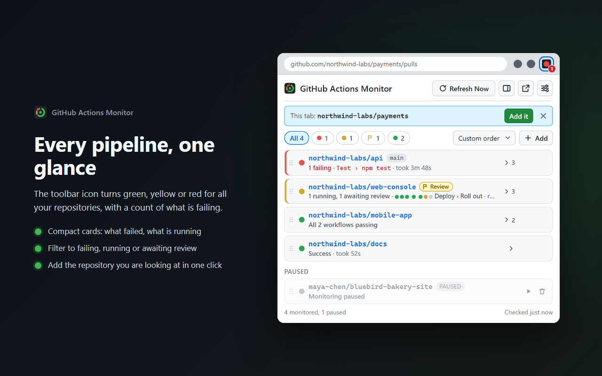
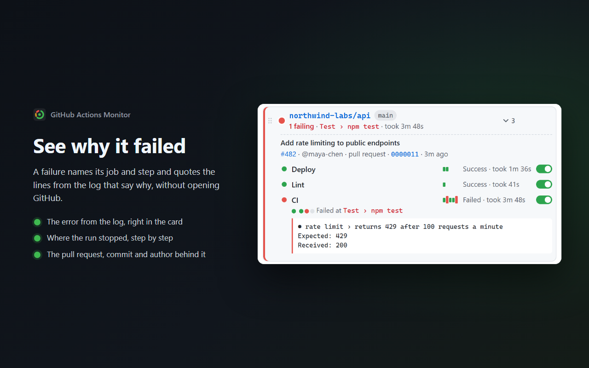
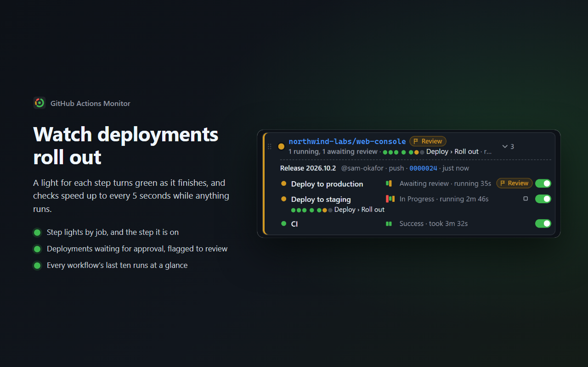
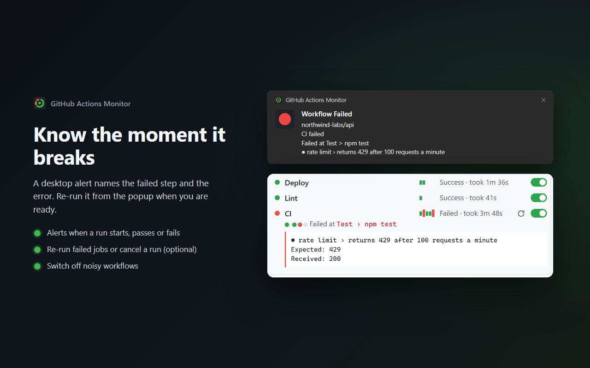
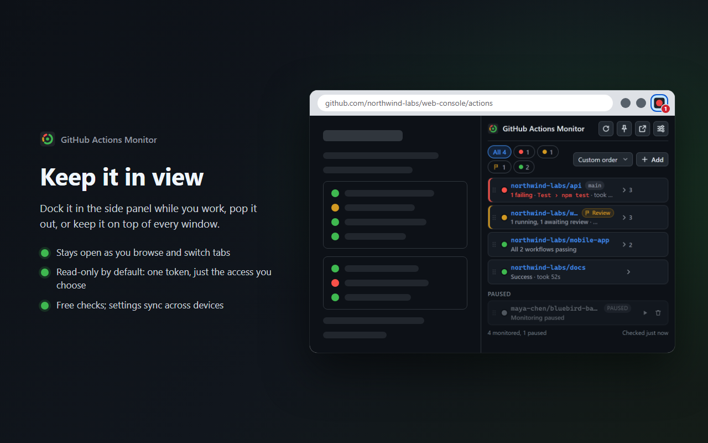

// Free and open source Chrome extension
Your CI status, live in the toolbar
Know the moment a build breaks, without keeping a GitHub tab open. The toolbar icon turns green, yellow or red for all the repositories you care about. Click it for every workflow, the step that failed and why, live run timers and one-click links to the runs.
Live on the Chrome Web Store

// At a glance
One icon for all your repositories
Green
Every workflow's latest run passed.
Yellow
Something is queued or running. Checks speed up to every 5 seconds until it finishes.
Red
Something failed. It flashes red and green when some repositories passed and others failed. A number on the icon counts the failing repositories.
// Features
Made for real projects
See why it failed
Each repository is a compact card whose state line names the failed job and step. Expand it for the lines from the log that say why, every workflow with its last ten runs, and the commit, pull request and author behind the run.
Keep it in view
Dock it in Chrome's side panel while you browse, pop it out into its own window, or keep it on top of every other window in a corner of your screen.
Step lights
A running workflow lights a small light for each step as it finishes, the current one pulsing, so you can see how far along it is at a glance.
Every workflow counts
The latest run of each workflow decides the status, so a failing CI is never hidden by a deploy that finished after it. Switch off noisy workflows; cancelled and skipped runs never raise false alarms.
Live run timers
Running workflows count up as they go; finished ones show how long they took. Click any workflow to open its run.
Rate-limit safe
When nothing changed, GitHub answers "not modified", which does not count against your API limit. The settings page shows live usage.
Branches and pausing
Watch all branches or a specific one, the same repository on several branches, and pause the ones you are not working on. On a repository's GitHub page, add it in one click.
Alerts and reviews
Optional desktop notifications when a workflow starts, succeeds or fails, naming the failed step. Runs waiting for a deployment review are marked, with a link to review them.
Read-only by default
A read-only token is all it needs. Re-run and cancel buttons appear only if you switch them on.
// A closer look
From "something broke" to "here is why"




// Open source, no server
Nothing in between you and GitHub
An extension that holds a GitHub token should be one you can inspect. GitHub Actions Monitor is open source under the GPL, and it has no backend at all: your browser talks to GitHub's API directly, with your own token.
- No server, no analytics, nothing sent to the developer
- Talks only to
api.github.com - Works with a fine-grained token limited to Actions: Read-only
- Re-run and cancel are off unless you turn them on
- Your token stays on this device unless you choose to sync it
- Reads the current tab's address only when you open the popup, never page content
// Setup
About two minutes
The settings page walks you through it and checks your token as soon as you save it.
- Open the settings page: right-click the toolbar icon and choose Options, or use the settings button in the popup.
- Choose features (optional). The number on the icon, notifications, and whether to show re-run and cancel buttons. They come first because re-run and cancel decide the token's permission, so you only ever make one token. Leave them off to stay read-only.
- Create the token. Click Create a read-only token on GitHub (or Create a token with re-run and cancel). GitHub's form opens with the name, a 90-day expiry and Actions: Read-only (or Read and write) already set. Under Repository access choose All repositories (or the ones to monitor), then Generate token.
- Paste it and click Save Token. The extension checks it right away: account, token type, how many repositories it can see, remaining API requests.
- Add repositories. Click the toolbar icon, then + Add: type an owner (your username or an organization), pick the repository and a branch (or "All branches") and click Add Repo. On a repository's GitHub page, just click Add it.
For an organization's repositories, choose the organization as the token's Resource owner. Some organizations must approve fine-grained tokens before they work. A classic token also works, but its repo scope grants far more access than needed.
// Install
Get GitHub Actions Monitor
Install it from the Chrome Web Store. Prefer to run the code yourself? Clone the repository and load the folder in chrome://extensions with Developer mode on: there is no build step.
// FAQ
Questions
Is it really free?
Yes, every feature, with no account with us. It uses your own GitHub token and GitHub's API. If it saves you time, you can support the project.
Which token does it need?
A fine-grained personal access token with Actions: Read-only, for all your repositories or only the ones you monitor. The settings page opens GitHub's form with that already set. Re-run and cancel, if you turn them on, need Actions: Read and write instead. Classic tokens work too, but the token check warns that their repo scope grants more than needed.
Will it use up my API rate limit?
Rarely. Every check is a conditional request, and when nothing changed GitHub answers "304 Not Modified", which does not count against the limit. Checks run at your interval (30 seconds to 5 minutes) and every 5 seconds only while something runs. Pause repositories you are not working on to save more.
Does it work with organization and private repositories?
Yes. Type the organization as the owner and pick from all of its repositories the token can see, private ones included. Create the token with the organization as its Resource owner; some organizations must approve fine-grained tokens first.
Can it change anything in my repositories?
Not unless you let it. With the recommended read-only token it can only read. Re-run and cancel buttons appear only after you turn them on in Settings and give the token write access to Actions.
Something isn't working
The settings page's Test Token button shows what your token can see and whether it works, which answers most questions. Still stuck? Open an issue or email James@Levac.net with your Chrome version and what the settings page shows.
// Support the project
Free, with no catch
GitHub Actions Monitor has no paid tier and holds nothing back. If it saves you time, sponsoring keeps it maintained as GitHub and Chrome change.
// More from James Levac
Other extensions
- Inbox Pilot: ask ChatGPT about your Gmail from the search bar.
- GitHub Repo Navigator: every repository you can access, in your own sections, where GitHub shows its short "Top repositories" list.